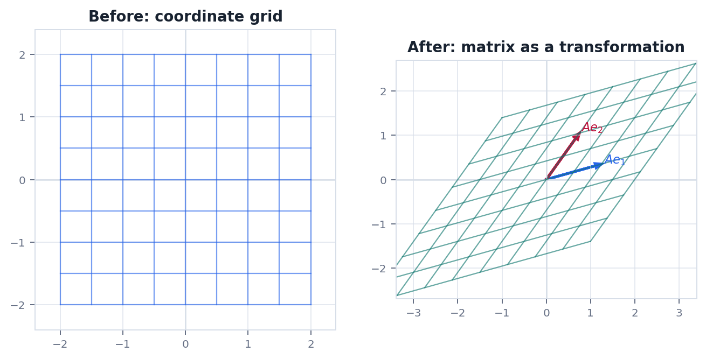
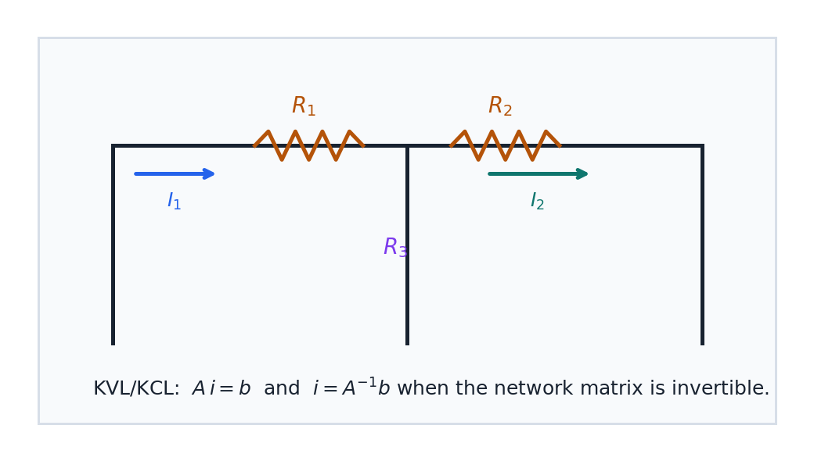

Route
0. 全章主线
矩阵运算看似规则多, 主线其实是变换如何组合和反解.
向量输入状态或坐标写成列向量.
矩阵作用矩阵把输入变成输出.
乘法多个变换连续执行.
单位矩阵什么都不改变的基准.
逆矩阵把输出还原成输入.
本章核心矩阵乘法不交换, 因为先旋转再拉伸和先拉伸再旋转通常不是同一个动作.
Meaning
1. 矩阵不是一张表
矩阵最重要的解释是线性映射: 输入一个向量, 输出另一个向量.
当 $A$ 是 $m\times n$ 矩阵时, 它接受 $n$ 维向量并输出 $m$ 维向量:
$$
A:\mathbb{R}^n\to\mathbb{R}^m,\quad x\mapsto Ax
$$
第 $j$ 列 $a_j$ 可以理解为标准基向量 $e_j$ 被矩阵送到的位置. 因此
$$
Ax=x_1a_1+x_2a_2+\cdots+x_na_n
$$
矩阵乘向量的本质是用输入坐标对矩阵列向量做线性组合.
Multiplication
2. 乘法为什么是行乘列
矩阵乘法来自变换复合, 不是任意定义出来的记号游戏.
若 $B$ 先把 $x$ 变成 $Bx$, 再由 $A$ 作用, 总效果是 $A(Bx)=(AB)x$. 这要求乘积 $AB$ 的每一列等于 $A$ 作用在 $B$ 的对应列上.
$$
AB=\left[Ab_1\ Ab_2\ \cdots\ Ab_k\right]
$$
维度检查$A_{m\times n}B_{n\times k}$ 才能相乘, 结果是 $m\times k$. 中间维度代表前一个输出必须能喂给后一个输入.
Inverse
3. 逆矩阵的意义
可逆意味着变换没有丢信息, 每个输出都能唯一追溯回输入.
$$
A^{-1}A=AA^{-1}=I,\quad Ax=b\Rightarrow x=A^{-1}b
$$
但实际计算中, 不应该把"求逆再相乘"当成默认数值方法. 求解线性系统通常更适合用消元, LU 或 QR. 逆矩阵更重要的价值是表达结构: 这个变换是否能倒回去.
可逆旋转, 非零缩放, 不把空间压扁的剪切.
不可逆投影, 把平面压成线, 把多维信息合并掉.
单位矩阵所有向量都保持原样, 是变换复合中的中性元素.
Geometry
4. 几何图像: 网格怎样被矩阵移动
观察网格能快速看出矩阵的旋转, 拉伸, 剪切和压缩效果.


图中的网格线仍保持直线和平行, 这是线性变换的重要特征. 如果一个变换会把直线弯成曲线, 它就不是线性代数这一章研究的对象.
Physics
5. 物理问题: 电路网络中的矩阵
线性电阻网络把电压, 电流和电阻连接成矩阵方程.
问题在由线性电阻组成的电路里, Kirchhoff 电流定律和电压定律给出一组线性约束. 未知量可以是支路电流, 节点电压或网孔电流.
$$
Gv=i,\quad G_{ij}\ \text{由电导和连接关系决定}
$$
若矩阵 $G$ 在选定边界条件下可逆, 给定注入电流 $i$ 就能唯一求出节点电压 $v$. 若不可逆, 常见原因是参考电位没有固定, 或网络中存在无法区分的自由漂移模式.
Checklist
6. 实战清单与易错点
矩阵题优先检查维度, 顺序和信息是否丢失.
实战清单
- 每个矩阵的输入维度和输出维度是什么?
- 乘法顺序是否对应真实执行顺序?
- 是否需要可逆, 还是只需要求解 $Ax=b$?
- 特殊矩阵的性质是否满足条件?
高频错误
- 把矩阵乘法当成对应元素相乘.
- 默认 $AB=BA$.
- 把有解和可逆混为一谈.
- 忘记检查 $A$ 是否方阵就谈逆矩阵.
记住矩阵是线性规则, 乘法是规则复合, 逆矩阵是规则可反向执行.